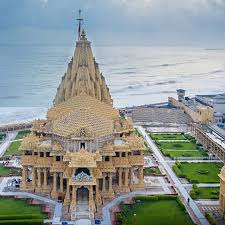

Somnath Temple


Location: Prabhas Patan, near Veraval, Saurashtra, Gujarat
Deity: Lord Shiva (Somnath – The Lord of the Moon)
Architecture: Reconstructed in Chalukya style; known for resilience through history
Historical Significance: One of the 12 sacred Jyotirlingas
Legends: Moon God (Chandra) worshipped Shiva here for redemption
Importance: Integral part of the Char Dham pilgrimage
Destruction & Rebuilding: Rebuilt multiple times; last restored in 1951 by Sardar Vallabhbhai Patel
Dwarkadhish Temple
Location: Dwarka, Gujarat
Deity: Lord Krishna (Dwarkadhish – King of Dwarka)
Architecture: Traditional spire temple with intricate carvings and grand sanctum
Significance: Part of Char Dham; major Krishna pilgrimage site
Historical Background: Linked to the ancient city of Dwarka ruled by Krishna
Legends: Reflects stories from Krishna’s life and divine acts